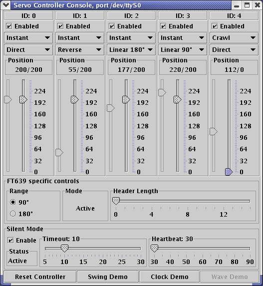

Introduction
Documentation
Build Process
Platform Neutral
Metadata
Driver Release Notes
Get Involved
SourceForge
Family
|
|
Introduction
|
ServoMaster can be built and used in
different ways, depending on required driver
set and platform. The unified build process
runs natively on Linux. There shouldn't be a
problem to run it on other Unices, provided
the native library support exists, for USB
in particular. Mac OS X should be supported
in the same way, though no volunteers were
encountered so far ;)
However, the result can run on any platform,
provided the following conditions are met:
- Driver code is 100% pure Java and
doesn't depend on the native libraries
to run.
Basically, any serial only driver
will work on any platform, but since my
hardware resources are limited, at the
moment of writing there's the only driver
that satisfies this condition, and it is FT639.
Again, at the moment of writing, USB devices
are supported only on Linux (because jUSB
is used), however, there is work in progress
to port the USB support to use javax.usb.
Hopefully, this will allow to make the
result portable.
|
|
Prerequisites
|
Absolutely necessary:
- Java
Virtual Machine. Preferred
version is the latest one (JDK
1.4.1_01), though older ones are
probably supported as well. If you
try to use the older JDK and the
build process or the result fails
with a mysterious message, you've
probably stepped on a feature which
is not backward compatible. In this
case, submit a bug report, and they
are usually honored.
Word of warning, though: later
versions of JDK are much more
advanced than the earlier ones, so
it would be a good idea to upgrade
anyway. There are several known
problems related to inner classes,
synchronization semaphore lockups
and other things (just don't
remember what exactly right now),
even with JDK 1.3. Beware.
Required for FT639:
Required for Phidgets:
- jUSB
- Java USB support for Linux.
- javax.usb
- this will hopefully replace jUSB soon.
Required for the Hard Way:
- Jakarta
Ant,
--with-ANT
configure option. Minimum version
required is 1.4.
- Sun's
javac.jar or
tools.jar,
--with-JAVA_COMPILER
configure option. Examine the Ant
documentation to find out where it
fits. You may be able to get away
without specifying this option at
all - latest JDKs have this jar
exactly where it's needed.
- Apache
Xerces-J,
--with-XERCES
configure option. Current version
will suffice.
- GNU
autoconf. Version 2.53 is
required. Version 2.13 is
guaranteed to fail.
- GNU
automake. Versions 1.5 and 1.6
are known to work. Version 1.4 is
known to fail.
|
|
Easy Way
|
If all you need is to take a look at what it
is, or you're lucky enough to have a
controller that doesn't require external
dependencies (like FT639), you can get
away with the easy way.
- Grab the jar file from here
(get the latest release).
- Run the following command (one line):
java -jar servomaster.jar
org.freehold.servomaster.device.impl.ft.FT639ServoController
<port>
where <port> is
COMX on Windows
boxes,
/dev/ttySX on
Linux,
/dev/term/X on
Solaris and so on. X is the
actual port number. Make sure that
port is not occupied by your modem,
Palm cradle or anything like that.
- Enjoy.
You don't really have to have any hardware
to run the package. Right now, there is
FT639 that is not returning any status, so
the driver for it can be run without the
hardware.
|
|
Hard Way
|
- Untar the source tarball, of
course.
- Hardcore OpenSource people will
find the build process comfortable
- it's simple
./configure &&
make all install. However,
it is highly recommended to run
./configure --help
first, because even though the autoconf
is used to adjust the build to the
system, the tools used (Ant and
Xerces) do not have a standard
location, thus it has to be
specified.
To avoid specifying configure
options again and again, it is
recommended to use the
./configure-options
file to specify them, one item per
line. This is how mine looks:
--prefix=/opt/vt/servomaster
--enable-phidget
--enable-ft639
--with-jusb=/home/vt/jusb-0.4.4
--with-ANT=/home/vt/servomaster-libs/ant.jar
--with-XERCES=/home/vt/servomaster-libs/xerces.jar
- There is a class that serves as a
- testbed and a demo for the
package
-
org.freehold.servomaster.view.Console,
and
$prefix/bin/console_view
shell script is a wrapper for it.
It takes two parameters: the
hardware driver class name, and the
driver-specific port name. It is
completely hardware independent.
There is no dummy class
implementing nonexistent controller
that doesn't require any hardware,
however, the FT639
controller the driver for which has
been already implemented doesn't
provide any feedback, so it can be
used as a demo. The only
requirement is that you specify a
valid unoccupied serial port ID,
like this:
$prefix/bin/console \
org.freehold.servomaster.device.impl.ft.FT639ServoController \
/dev/ttyS1
where $prefix is where
you actually install the package.
That's it, you should be seeing the console right now.
|
|
What Is What On The Console
|
Below is the snapshot of the simplest
console possible, FT639. Keep in mind
that due to the differences in the
controller features and continuing
development the actual console may look a
little different.

- Silent
- The Silent checkbox, if
checked (default if the controller
supports
it), puts the controller in a
'sleep' mode - stops the servo
pulse after a timeout.
- ID
- is a controller-specific servo name.
- Enabled
- This checkbox enables (default) or
disables the particular servo.
- Instant/Crawl
- The transition controller
selection. Instant means
that there is no transition
controller attached, Crawl
means that the crawl transition
controller is attached to the
servo. Read the javadocs
on this class to find out more (you
have to
'make javadoc'
to use that link, or look it up on
the master
site).
- Direct/Reverse/Linear 180°/Linear 90°
- The coordinate transformer
selection. Direct means that
there is no coordinate transformer,
Reverse is self-explanatory,
and Linear is explained in
the class documentation.
- The sliders
- The right one controls, the left
one displays. Play with the
transition controllers and
coordinate transformers to see what
happens. Be careful with the servos
- not all of them like to be set to
180° range.
The stuff below pertains to the specific
controller features, and is usually either
self-explanatory or too weird to bother.
Since the controller name is there, just
look up the release notes on that particular
controller in the index.
|
|